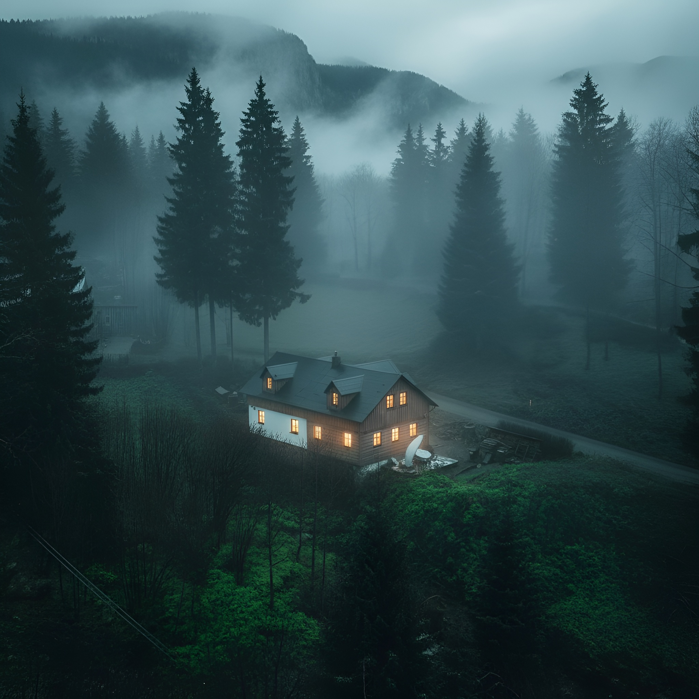
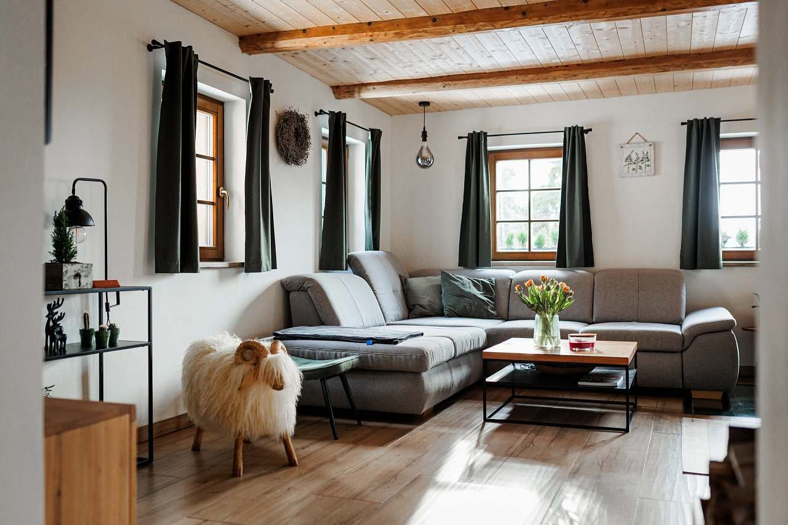
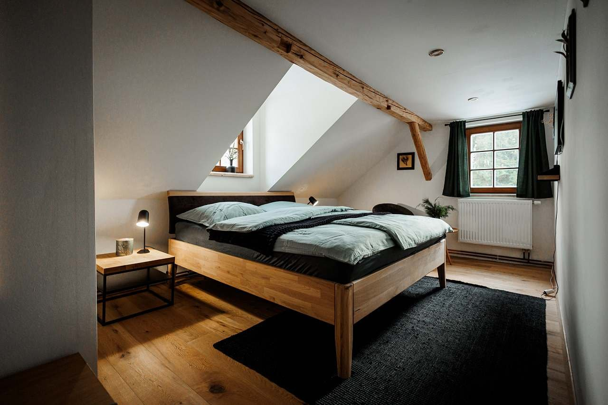
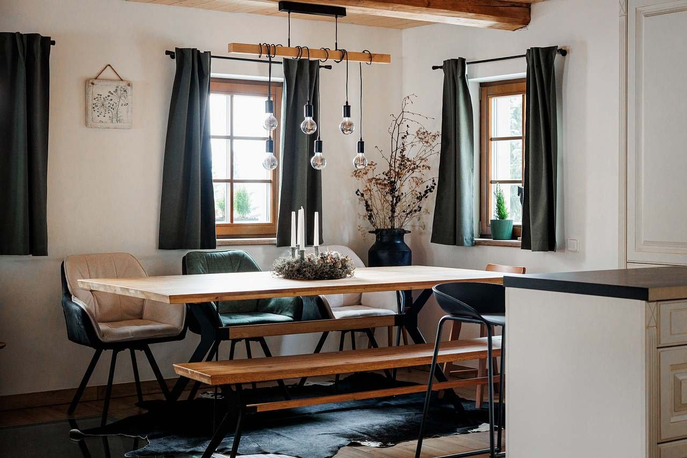
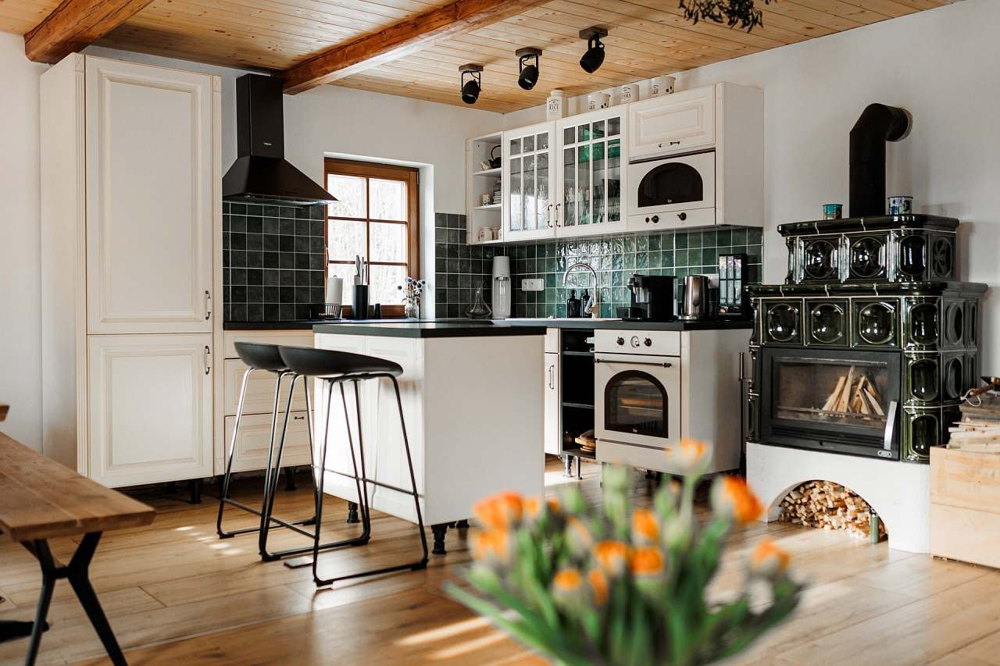
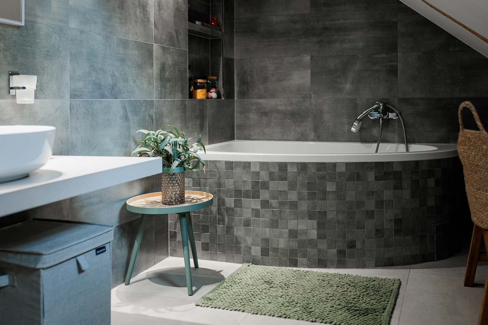
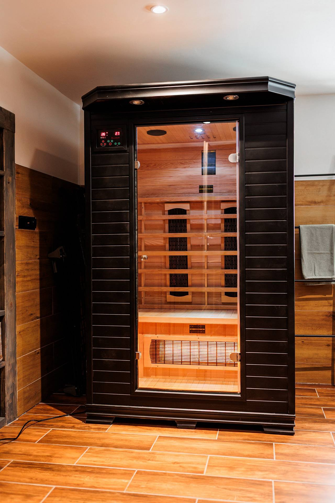
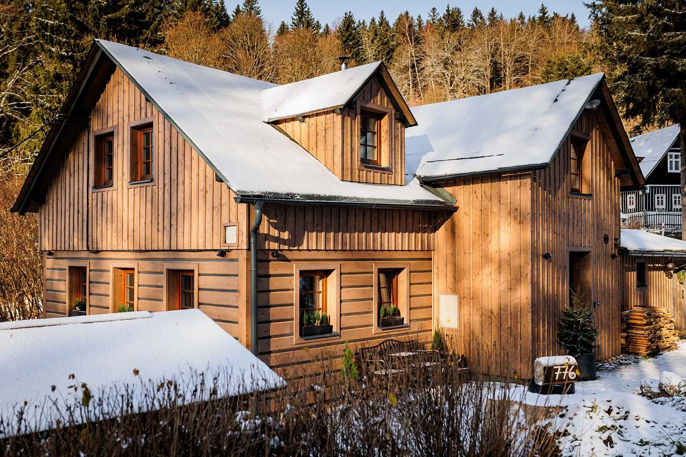
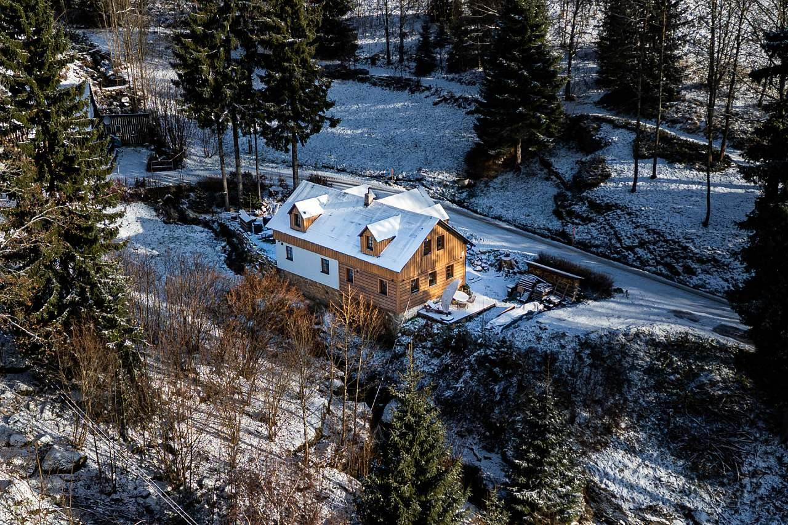
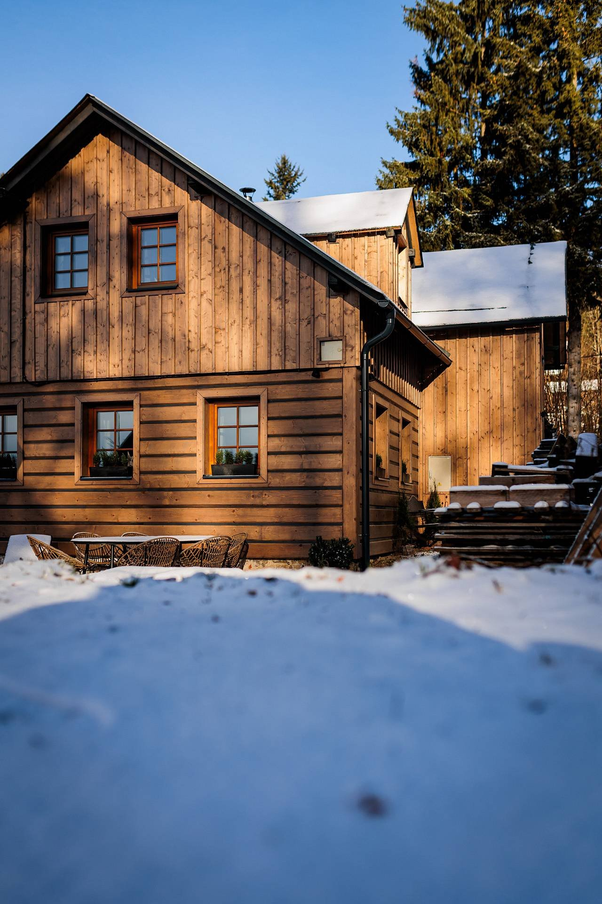

O chatě
Nově zrekonstruovaná. Přímo u vleku.
Nástup na vlek U Tomáše je z pozemku. Sjezdovky Tanvaldského Špičáku jsou 5 minut pěšky. V létě začíná Jizerská magistrála za rohem. Auto v zimě nepotřebujete — a to je přesně ten bod.
10
osob celkem
3
samostatné ložnice
2
koupelny
Infra
sauna
sauna
v přízemí
3
parkovací místa přímo u chalupy
Ubytování
Tři ložnice, deset míst — a vlastní lyžárna.
Tři ložnice, 8 pevných lůžek, rozkládací gauč — dohromady místo pro 10 osob. V přízemí obývák s krbem, plně vybavená kuchyň a lyžárna. V patře koupelna s vanou.
1. patro — spací část
- 1. ložnice s manželskou postelí
- 2. ložnice s manželskou postelí a jednolůžkem
- 3. ložnice s jednolůžky a koutem
- Odpočinkový pokoj s TV
- Koupelna s vanou
Přízemí — společné prostory
- Obývací místnost s jídelním stolem a krbem
- Plně vybavená kuchyňská linka
- Lyžárna a sušárna
- Koupelna se sprchovým koutem + infrasauna
- Samostatné WC


Vybavení
Od lyžárny po infrasaunu.
Krb
Infrasauna
Koupelna s vanou
Sprchový kout
Kuchyňská linka
Lyžárna — 8 párů bot
TV
3 parkovací místa
El. vytápění nebo krb
Okolí
V zimě sjezdovky. V létě magistrála. Zbytek roku — klid.
Zima
- Sjezdovka přímo u chalupy — vlek U Tomáše
- Tanvaldský Špičák — lyžařský areál 5 minut pěšky
- Jizerská padesátka — běžecké trasy magistrály
- Bikepark Špičák (zimní provoz)
Jaro / léto / podzim
- Turistika a cyklistika — Jizerská magistrála
- Bikepark Tanvaldský Špičák
- Koupání — Přehrada Desná, Nádrž Souš
- Houbaření, rozhledny, Muzeum hraček Detoa
- Liberec: Zoo, IQ Landia, Babylon, Ještěd
Blízká místa
Tanvaldský Špičák
Jizerská magistrála
Albrechtice v Jizerských horách
Přehrada Desná & Souš
Rozhledny a vyhlídky
Liberec — Zoo, Ještěd, IQ Landia
Galerie
Chalupa v obrazech

Jídelní stůl

Kuchyně

Koupelna s vanou

Infrasauna

Exteriér chalupy

Letecký pohled
Kontakt
Pošlete dotaz — termíny se plní rychle.
Rezervace online:
